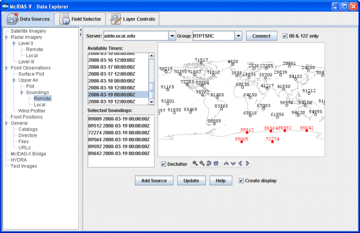
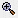
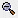
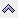
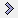

Choosing Upper Air Sounding Data
Upper air RAOB data can be displayed as soundings. You can access RAOB data as soundings either from remote ADDE servers (using the Point Observations->Soundings->Remote chooser, pictured below) or from local files (using the Point Observations->Soundings->Local chooser). The only difference between these two choosers is specifying the source of data. You either select an ADDE server and press Connect, or you can select a file containing RAOB data. For more information on how to use these choosers, see Getting Started - Displaying RAOB Sounding Data.

Image 1: RAOB Chooser
Properties
- Server - Selects the server to be used. Enter in a server name or choose one from the pulldown menu.
 Manage - Manages the list of servers by opening the ADDE Servers tab of the User Preferences window.
Manage - Manages the list of servers by opening the ADDE Servers tab of the User Preferences window.- Dataset - Selects the dataset to be used. Enter in a dataset name or choose one from the pulldown menu.
- Public Servers - Lists the public datasets available on the server.
 - Connects to and queries the server for available times.
- Connects to and queries the server for available times.- Station Map - Displays the stations on the map. Select a station using the map. Left clicking on a station will select it. For multiple selections, Shift+drag will select all stations within a region. Ctrl+drag will add the stations in the selected region to the set of already selected stations. Pressing the Ctrl+A key will select all stations. Right-clicking in the map will bring up a menu that allows you to select all stations and to clear the selection. The Declutter checkbox allows you to show all stations (not checked), or only a limited number of stations that do not overlap each other (checked). You will need to zoom in to see all the stations without overlaps. Use the Zooming and Panning options to locate a station, or the following buttons:
-  Zoom In - Zooms in over the current map area.
-  Zoom Out - Zooms out over the current map area.
- Previous
Map Area - Returns to the previous map area.
- Home Map Area - Returns to the default map area.
-  Move View Up - Moves the view up (map down).
- Move View Down - Moves the view down (map up).
- Move View Left - Moves the view left (map right).
-  Move View Right - Moves the view right (map left).
- Available Times - Selects a single
or set of dates and times to use. To select more than one time use Ctrl+click or Shift+click.
- 00 & 12Z only - Lists only the 00Z and 12Z soundings under Available Times.
- Selected Soundings - Shows soundings available for the times selected at all locations selected in the Available Times.
 Help - Brings up this help page.
Help - Brings up this help page. Refresh - Updates the RAOB chooser with the most recent data.
Refresh - Updates the RAOB chooser with the most recent data.- Cancel - Cancels the query of data and stations. The chooser will reset back to default.
 - Loads the selected RAOB data.
- Loads the selected RAOB data.